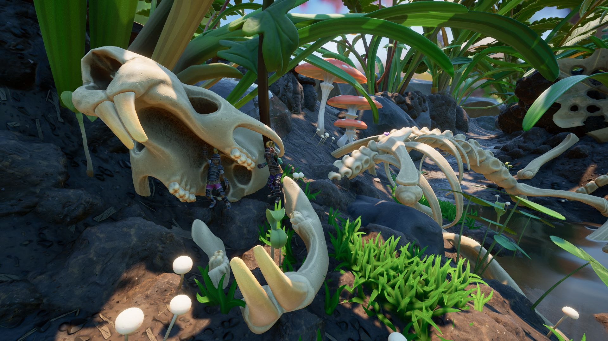
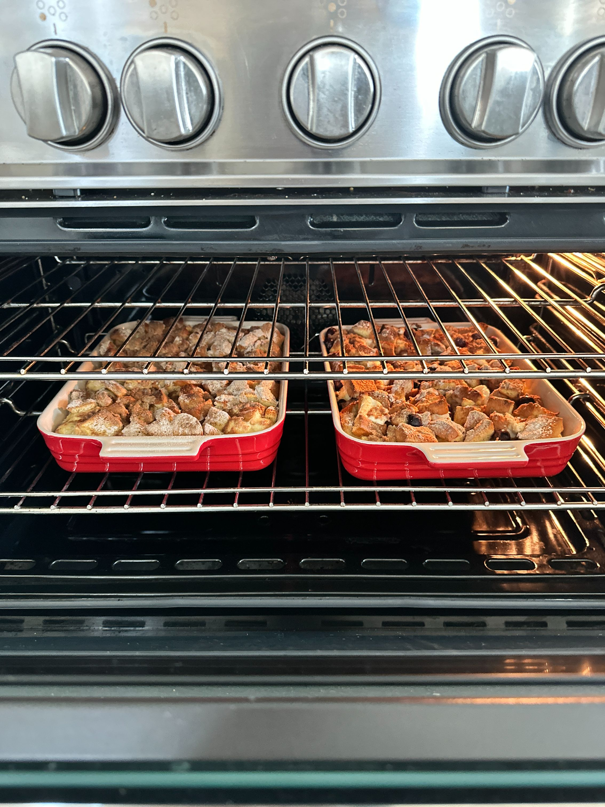
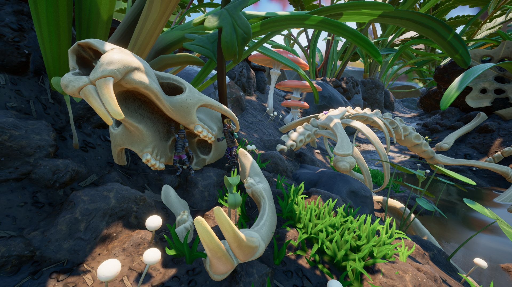
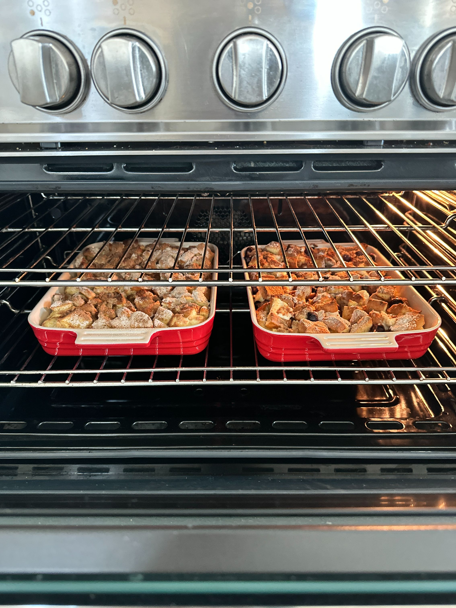
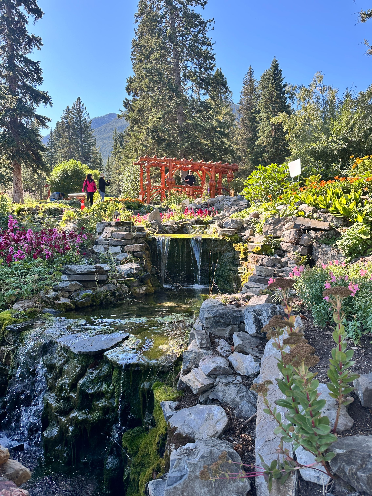
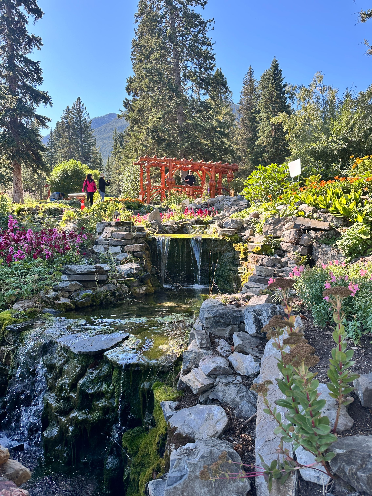

Keeping hobbies close and participating in them daily Keep a sense of balance in my life. Video games were introduced to me by my dad, whislt my mother introduced me to baking. Both of these things keep me connected to my family and childhood, and like my parents, are very important to me. Arts and Crafts have been my thing, I find comfort in expression and finding that little 'thing' i enjoy.
 



 
